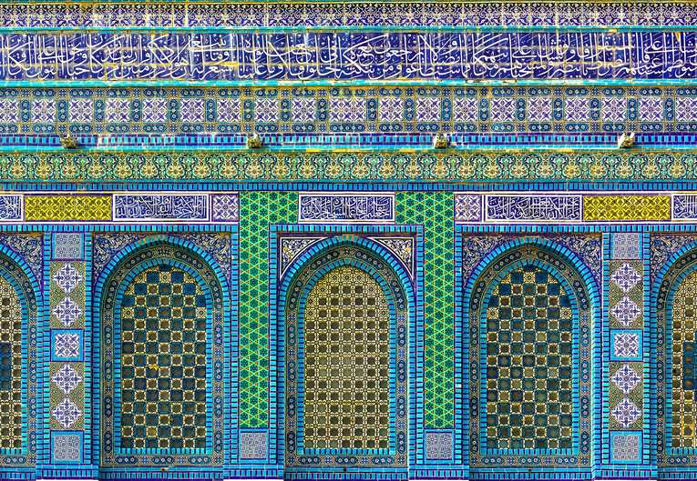

WayToNoor — «طريق النور» — "Your way to the Light of Islam — with a companion for your first steps."
Qur'an quotations follow the Saheeh International translation. Hadith quotations follow recognised published English translations, with the same source references (takhrij) as the Arabic edition.
1. Opening Hook

In every Muslim city you will hear names repeated in every home, street and school: Abraham, Moses, Joseph, Mary, Jesus… Names Muslims carry, belonging to prophets a non-Muslim might assume are "someone else's prophets." So why does the Muslim carry these names, love the people who bore them, and read their stories in his Book every day? Because in his view their story did not end — it was completed. This unit opens the whole chain for you, from its very beginning.
2. Executive Summary
Prophethood in Islam is one connected story: Allah sent to every nation a messenger with a message whose essence is one — worshipping Allah alone, doing good, and preparing to meet Him — so the origin was united while the practical laws were many, according to the nations and the times. The Muslim believes in all the prophets without distinguishing between them, and loves Abraham, Moses and Jesus with the love he has for his own guides, not as "the prophets of others." The messengers are human beings like us, so that they can be a possible example, and their chain was sealed with Muhammad ﷺ, with a universal message for all people and a preserved Book. Islam, then, does not present itself as a separate, competing religion, but as the final link in the long caravan of guidance.
3. Before You Begin: Prerequisites and Your Place in the Path
This is Unit 4 of 12. It is built on two results from Units Two and Three: that Allah is One and Wise, and that creation has a purpose — and what remained was the question of the means: how does the answer about that purpose reach human beings? Its answer is the subject of this unit. It stands on its own for someone who arrived from a search engine, but its place here leads directly into Unit Five, about the Seal of the chain himself.
4. Unit Objectives
By the end of this unit, you will be able to: - Explain the wisdom behind sending messengers, and why man was not left to his reason alone. - Describe the unity of the prophets' message across history, and the Muslim's stance toward the prophets of all the heavenly religions. - Show the place of Abraham, Moses and Jesus, peace be upon them, in the Qur'an, with specific examples. - Explain why the laws and the books were many while the origin was one, and why prophethood was sealed.
5. Main Text
5.1 Why Did Allah Send Messengers at All? Was Reason Not Enough?
We saw in Unit Two that reason points to the Creator, but it cannot on its own know the details of what the Creator wants from His servants, nor the news of the unseen and of the final destiny. So it was of Allah's mercy and justice that He did not leave human beings groping in conjecture; rather, He sent to them, from among themselves, messengers who convey the guidance to them in their own languages and tongues, and who are for them a human example to be followed. Allah the Exalted said: ﴿And We did not send any messenger except [speaking] in the language of his people to state clearly for them﴾ [Ibrahim: 4] — the messenger speaks his people's literal and cultural language; he does not come to them from another world, nor in a tongue they do not understand. And He said: ﴿[We sent] messengers as bringers of good tidings and warners so that mankind will have no argument against Allah after the messengers. And ever is Allah Exalted in Might and Wise﴾ [An-Nisa: 165]. So after the messengers were sent, no human being can say on the Day of Reckoning: nothing reached me, and I did not know the way.
And these messengers, in the belief of the Muslims, were neither angels nor demigods, but human beings who eat and walk in the markets, who marry, are tested, fall ill and die — as Allah the Exalted said of them all: ﴿And We did not send before you, [O Muhammad], any of the messengers except that they ate food and walked in the markets﴾ [Al-Furqan: 20] — so that their lives would be a practical proof: a human being like you was able to live the guidance in the reality of human life, so you have no excuse to say: this is a religion human beings cannot manage.
Sources: - The Noble Qur'an: [An-Nisa: 165], [Al-Furqan: 20], [Ibrahim: 4]. - Ibn Kathir, Tafsir al-Qur'an al-'Azim (Exegesis of the Noble Qur'an) — at the exegesis of verse 165 of Surat An-Nisa. - IslamWeb website (islamweb.net) — the Creed Encyclopaedia, entries on "The Wisdom Behind Sending the Messengers."
5.2 One Message Across All of History
The most astonishing thing in Islam's conception of prophethood is that it is not competing religions, but one message whose links followed one another: every prophet calls his people to worship Allah alone, to abandon the worship of anything besides Him, to do good, and to prepare to meet Allah. Allah the Exalted said: ﴿And We certainly sent into every nation a messenger, [saying], "Worship Allah and avoid taghut"﴾ [An-Nahl: 36]. And He said of Himself and of His messengers: ﴿He has ordained for you of religion what He enjoined upon Noah and that which We have revealed to you, [O Muhammad], and what We enjoined upon Abraham and Moses and Jesus — to establish the religion and not be divided therein﴾ [Ash-Shura: 13].
That is why the Muslim believes in all the prophets with a single faith, making no distinction between them in the origin of prophethood: ﴿Say, [O believers], "We have believed in Allah and what has been revealed to us and what has been revealed to Abraham and Ishmael and Isaac and Jacob and the Descendants [al-Asbat] and what was given to Moses and Jesus and what was given to the prophets from their Lord. We make no distinction between any of them, and we are Muslims [in submission] to Him"﴾ [Al-Baqarah: 136]. Whoever denies a single one of Allah's prophets, in the view of the Muslims, has left this all-embracing faith — because the message is one and the Sender is One.
Consider the effect of this on the Muslim's soul: he does not feel that Abraham, Moses and Jesus are "the prophets of others"; rather, they are his own prophets, his guides, and the most beloved of creation to him after Muhammad ﷺ. He names his children after them, reads their stories in his Qur'an every day, and sees himself as the final link in their long caravan.
Sources: - The Noble Qur'an: [An-Nahl: 36], [Ash-Shura: 13], [Al-Baqarah: 136], [Al-Baqarah: 285]. - Ibn Kathir, Qisas al-Anbiya (Stories of the Prophets) — the introduction on the unity of the prophets' call. - Islam Question & Answer website (islamqa.info) — answers on "Belief in the Messengers" for seekers.
5.3 Shining Names in the Chain: Abraham, Moses and Jesus, Peace Be Upon Them
The Qur'an mentions the names of twenty-five prophets and messengers, and tells us that among them are some whose stories it did not relate to us. At their head is Abraham, peace be upon him, "the Father of the Prophets," at whose name Jews, Christians and Muslims meet. The Qur'an presents him as a model of the sincere seeker of truth: a youth who watched his people worshipping the stars and the idols, and began to question what was around him with an open mind: ﴿So when the night covered him [with darkness], he saw a star. He said, "This is my lord." But when it set, he said, "I like not those that set [i.e., disappear]"﴾ [Al-An'am: 76]. Then his gaze moved to the moon, then the sun, and he found them all setting, disappearing, and subject to a law greater than themselves, so he arrived at the conclusion summed up in his words: ﴿Indeed, I have turned my face [i.e., self] toward He who created the heavens and the earth, inclining toward truth, and I am not of those who associate others with Allah﴾ [Al-An'am: 79]. Notice the method: Abraham did not inherit a ready-made answer; he asked, reflected, and rejected what sets and changes, until he was guided to the Creator of the heavens and the earth alone — and it is the very method this path invites you to from its first unit. And his Lord describes him with His words: ﴿Indeed, Abraham was a [comprehensive] leader, devoutly obedient to Allah, inclining toward truth, and he was not of those who associate others with Allah﴾ [An-Nahl: 120] — one man who, in his sincerity and steadfastness, stood in the place of an entire nation.
Then Moses, peace be upon him, the most-mentioned of the prophets in the Qur'an, the prophet of the Children of Israel who confronted Pharaoh's tyranny and called for the liberation of his people in the name of the One God, and to whom Allah sent down the Torah as guidance and light. Then Jesus, son of Mary, peace be upon him, who occupies in the Qur'an a station whose size many non-Muslims do not know: he was born of the Virgin Mary by a miracle, spoke in the cradle, was supported by Allah with great miracles, and was described by the Qur'an as "the word of Allah" and "a spirit from Him" cast unto Mary [An-Nisa: 171], and his mother was praised and chosen above the women of the worlds: ﴿And [mention] when the angels said, "O Mary, indeed Allah has chosen you and purified you and chosen you above the women of the worlds"﴾ [Aal-e-Imran: 42]. There will be a fuller discussion of Jesus, peace be upon him, later in this path within the readers' questions; here it is enough for you to know that a Muslim is not a Muslim until he believes in Jesus, Moses, Abraham and every prophet Allah sent, and loves them and honours them.
Sources: - The Noble Qur'an: [An-Nahl: 120], [Al-An'am: 76–79], [An-Nisa: 171], [Aal-e-Imran: 42], [An-Nisa: 163–164]. - Ibn Kathir, Qisas al-Anbiya (Stories of the Prophets) — the chapters on Abraham, Moses and Jesus, peace be upon them. - IslamWeb website — the Stories of the Prophets Encyclopaedia.
5.4 If the Origin Was One, Why Were the Laws and the Books Many?
A precise question: if the message is one, why the Torah, the Gospel and the Qur'an? And why did some practical rulings differ from one nation to another, such as the days of fasting, the forms of worship, and some of the prohibitions?
Islam answers: the fixed origin is one and does not change — the oneness of God, justice, morality, and preparing for the Hereafter — while in the practical details the revelation took into account the conditions of the nations, their times and their capacities, just as a physician keeps his goal one (healing the patient) while the prescription differs with the illness, the age and the condition. The Qur'an itself declared this intended multiplicity in a beautiful form: ﴿To each of you We prescribed a law and a method﴾ [Al-Ma'idah: 48] — for every nation a practical path suited to its stage, and the goal is one. So every revealed law came suited to its people and its time, and the final law came universal, for all people, valid for every time and place, because it came at the stage of humanity's final maturity.
As for the earlier books, Muslims believe that they were originally from Allah, but they say — in a calm presentation we will detail in the unit on the Qur'an — that their texts in circulation today were exposed, over the long centuries, to transmission, translation and human editing, so revelation became mixed in them with what is not revelation; while Allah undertook the preservation of the final Book Himself. That is why the Muslim deals with the prophets' stories in the earlier books by the measure of his Qur'an: what agrees with the Qur'an he believes, what contradicts it in the foundations of belief he rejects, and what the Qur'an is silent about he suspends judgement on, neither denying it nor affirming it with certainty.
Sources: - The Noble Qur'an: [Al-Ma'idah: 48], [Ash-Shura: 13], [Al-A'raf: 157]. - Ibn Kathir, Tafsir al-Qur'an al-'Azim — at the exegesis of verse 48 of Surat Al-Ma'idah, "To each of you We prescribed a law and a method." - IslamWeb website — entries on "Belief in the Heavenly Books" and "The Muslim's Stance Toward the Earlier Books."
5.5 Prophet and Messenger, and the Seal of the Chain
The scholars of Islam distinguish between the prophet and the messenger with a well-known distinction: the prophet is one to whom a law was revealed and who was not, in most cases, commanded to convey it to a new people, while the messenger is one sent to a people with a message, a book and conveyance; so every messenger is a prophet, but not every prophet is a messenger. The technical detail does not change the essence of what you are reading here: that Allah did not leave any nation without a guide.
Then this long chain was sealed with Muhammad ﷺ. Allah the Exalted said: ﴿Muhammad is not the father of [any] one of your men, but [he is] the Messenger of Allah and seal [i.e., last] of the prophets. And ever is Allah, of all things, Knowing﴾ [Al-Ahzab: 40]. So there is no prophet after him among the Muslims, and his message is for all people, not for one people over another: ﴿And We have not sent you except comprehensively to mankind as a bringer of good tidings and a warner. But most of the people do not know﴾ [Saba: 28]. And his Book is preserved, to remain the reference after revelation ceased. Why was the seal necessary? Because the message was completed, and because humanity reached a stage in which it could preserve the text and carry it to the whole world, so there was no longer a need to renew the message for each people separately.
Sources: - The Noble Qur'an: [Al-Ahzab: 40], [Saba: 28], [Al-Anbiya: 107]. - Safiur Rahman Mubarakpuri, Ar-Raheeq Al-Makhtum (The Sealed Nectar) — the introduction to the biography and the context of the sealing of prophethood. - Islam Question & Answer website — answers on "The Difference Between the Prophet and the Messenger" and "Why Was Prophethood Sealed?"
5.6 The Qualities of the Prophets: Human Beings Like You, and Protected in What They Convey
How does Islam combine two pictures that seem contradictory: a prophet who eats, drinks, falls ill, grieves and dies, and a prophet whose words about Allah are taken with absolute trust? The answer lies in a precise distinction that this unit preserves because it is the key to understanding the whole chain: the prophets are human in everything connected with their human nature — they hunger, thirst, sleep, rejoice and weep, and you saw in section 5.1 His words, the Exalted: ﴿And We did not send before you, [O Muhammad], any of the messengers except that they ate food and walked in the markets﴾ [Al-Furqan: 20] — but they are protected from error in everything connected with conveying Allah's message: they do not lie about Allah, they do not conceal revelation, and they do not affirm falsehood in His religion, because their function is to be a pure channel between heaven and earth; if the channel were corrupted, the message itself would be lost. And between humanness and protection in conveyance lies a third zone that Muslims deal with consciously: the prophets' own judgements in purely worldly matters — agriculture, management and war — which in their view are a noble human experience in which they may be right or may err, and upon which no belief is built.
This balance is what made the prophets a possible example rather than impossible legends: when Job is patient through his illness for years, when Jacob weeps for his son until his eyes turn white, when Moses fears and then stands firm, and when Muhammad ﷺ grieves at the loss of his loved ones — you are not reading about beings of light who do not know what you know, but about human beings who tasted what you tasted and worshipped Allah while in it. That is why the first thing the Qur'an affirms in describing their Seal is that he is human: so that the example is within human reach. The prophets in Islam are not intermediaries to be worshipped nor minor gods to be sanctified for their own sake; they are the guides of the road who walked it before you and left you the map and the traces.
Sources: - The Noble Qur'an: [Al-Furqan: 20], [Ibrahim: 4] — a reference to the texts of section 5.1. - IslamWeb website (islamweb.net) — the Creed Encyclopaedia, entries on "The Protection of the Prophets and Their Qualities."
5.7 What Does It Mean for You, Personally, to Believe in Them All?
Close the unit with a personal question: what changes in your life if you believe that these men — Noah, Abraham, Moses, Jesus and Muhammad, peace be upon them — are messengers from one God with one message? The first thing that changes is your relationship with the whole spiritual history of humanity: you no longer see it as warring islands of fighting religions, but as one connected river, which peoples sometimes diverted and which the prophets returned to its course every time. The second thing that changes is your stance toward the followers of the other messages: for the Muslim who believes in Moses and Jesus as two noble prophets cannot, in principle, despise a Jew or a Christian; between him and them there is a real common ground — prophets he loves and honours — even if he differs with them in the reading of what came after that in texts and history. And you read in section 5.4 how the Qur'an made this very difference a matter whose judgement is deferred to Allah: ﴿To each of you We prescribed a law and a method﴾ [Al-Ma'idah: 48].
And the third thing that changes — the deepest — is your sense of your own place in the story: you are not a spectator of a chain that ended fourteen centuries ago. The final message is preserved in your hands (and you will come to know its preservation file in Unit Six), and the Seal who sealed the chain — his biography awaits you in the next unit in its full human detail. It is as if the whole chain was a preparation for a question directed at you, personally, in the end: you have come to know the messengers and the message, so what is your own stance toward it? Do not rush the answer; the whole path is designed to bring you to it, rung by rung on the ladder that leads to the Light.
Sources: - The Noble Qur'an: [Al-Ma'idah: 48], [Saba: 28] — a reference to the texts of sections 5.4 and 5.5. - Islam Question & Answer website (islamqa.info) — answers on "The Meaning of Belief in All the Messengers and Its Effect."
5.8 Mary, Peace Be Upon Her: The Woman After Whom Allah Named an Entire Surah
The discussion of the chain is not complete without a pause at a name that stands alone in the whole Qur'an: Mary, daughter of Imran, peace be upon her, the only woman mentioned by name in the Book of Allah, and after whom He named an entire surah, one of its longest. You read in section 5.3 His words, the Exalted: ﴿And [mention] when the angels said, "O Mary, indeed Allah has chosen you and purified you and chosen you above the women of the worlds"﴾ [Aal-e-Imran: 42] — choosing, purification, and selection above the women of the worlds, in explicit Qur'anic wording that needs no intermediary to explain it. Among the Muslims, Mary is the mistress of the women of the people of Paradise, the worshipper of the sanctuary whom Allah provided for from where she did not expect, and the mother of Jesus, peace be upon him, who carried His word and a spirit from Him by a miracle, without a father. The Muslim reads her story in Surat Maryam in full emotional detail: her seclusion, the angels' glad tidings to her, the pains of her labour at the trunk of the palm tree, and her infant's speech in the cradle in defence of her purity.
This pause has a purpose beyond information: many visitors to this site from a Christian background carry a special, deep love for Mary, and it pleases them — and surprises some of them — to find the woman they love honoured in the Muslims' Book to this degree, by her name, her surah and her choosing, not as a passing reference in a margin. For the chain we have spoken of in this unit is not a chain of men only; at its heart is a woman whom Allah chose to be a sign for the worlds, and the mother of one of His greatest messengers. And when the Muslim believes in all the prophets, he believes in this whole blessed family: Imran and his household, Zechariah and John, and Mary and Jesus, peace be upon them all — one house among the houses of revelation, which the Muslim honours just as he honours the house of Abraham, peace be upon him, exactly alike.
From here you understand a phenomenon that may catch your eye in the lives of Muslims: that the names of the prophets are the most widespread names of their children across the centuries and the continents — Abraham, Moses, Joseph, Jesus, John, Zechariah and Mary. For when the Muslim names his son Moses or his daughter Mary, he is not borrowing a name from "another religion"; he is connecting his child to his own chain, and declaring that all of these are his people and his prophets. And when the Muslim reads, in his prayer every day, verses about these prophets, and sends prayers upon them all in his tashahhud, he lives the chain; he does not merely study it. That is why belief in all the messengers is, among the Muslims, a pillar without which faith is not valid: whoever believes in some of them and disbelieves in others has left — by the measure of the Qur'an itself — the unity of the message for the whims of selection; and the one message is not selected from; it is taken as a complete chain, as it came, from its first links to its Seal.
And a practical close to this unit: try this week to read the story of one prophet from the stories of the Qur'an as one connected reading — the story of Joseph, peace be upon him, in his surah in full, for example, or the story of Moses in Surat Al-Qasas — not to gather historical information, but to notice for yourself the pattern we have spoken of: a prophet sent to his people with the same message of the oneness of God, the elite deny him and the weak believe in him, and then the end is for the God-fearing. If you see the pattern repeating before your eyes from the text itself, "the unity of the message across history" is no longer a claim this site presents to you; it has become a personal observation of your own. And this is the Qur'an's preferred method of teaching in the first place: to relate the stories to you as stories, then say to you: so take heed, O people of vision. For the chain we studied analytically in this unit, the Qur'an invites you to see narratively, with your own eyes — and the two visions together make a certainty that neither one of them makes alone. Keep this conclusion with you as you move to the next unit: you are not facing competing religions born in separate ages, but one message as old as man himself, which Allah renewed at the hands of His messengers, generation after generation, until its Seal came and completed it and preserved it.
Sources: - The Noble Qur'an: [Aal-e-Imran: 42] — a reference to the text of section 5.3; and Surat Maryam [19: 16–35] on her story, peace be upon her. - IslamWeb website (islamweb.net) — introductory entries on "Mary, Peace Be Upon Her, in the Qur'an."